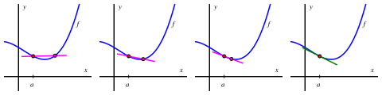
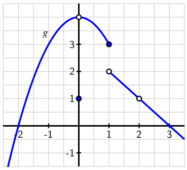

How is the average rate of change of a function on a given interval defined, and what does this quantity measure?
How is the instantaneous rate of change of a function at a particular point defined? How is the instantaneous rate of change linked to average rate of change?
What is the derivative of a function at a given point? What does this derivative value measure? How do we interpret the derivative value graphically?
How are limits used formally in the computation of derivatives?
The instantaneous rate of change of a function is an idea that sits at the foundation of calculus. It is a generalization of the notion of instantaneous velocity and measures how fast a particular function is changing at a given point. If the original function represents the position of a moving object, this instantaneous rate of change is precisely the velocity of the object. In other contexts, instantaneous rate of change could measure the number of cells added to a bacteria culture per day, the number of additional gallons of gasoline consumed by increasing a car's velocity one mile per hour, or the number of dollars added to a mortgage payment for each percentage point increase in interest rate. The instantaneous rate of change can also be interpreted geometrically on the function's graph, and this connection is fundamental to many of the main ideas in calculus.
Recall that for a moving object with position function \(s\text{,}\) its average velocity on the time interval \(t = a\) to \(t = a+h\) is given by the quotient
It is essential that you understand how the average rate of change of \(f\) on an interval is connected to its graph.
Preview Activity1.3.1.
Suppose that \(f\) is the function given by the graph below and that \(a\) and \(a+h\) are the input values as labeled on the \(x\)-axis. Use the graph in Figure 1.3.2 to answer the following questions.
Locate and label the points \((a,f(a))\) and \((a+h, f(a+h))\) on the graph.
Construct a right triangle whose hypotenuse is the line segment from \((a,f(a))\) to \((a+h,f(a+h))\text{.}\) What are the lengths of the respective legs of this triangle?
What is the slope of the line that connects the points \((a,f(a))\) and \((a+h, f(a+h))\text{?}\)
Write a meaningful sentence that explains how the average rate of change of the function on a given interval and the slope of a related line are connected.
Subsection1.3.1The Derivative of a Function at a Point
Just as we defined instantaneous velocity in terms of average velocity, we now define the instantaneous rate of change of a function at a point in terms of the average rate of change of the function \(f\) over related intervals. This instantaneous rate of change of \(f\) at \(a\) is called “the derivative of \(f\) at \(a\text{,}\)” and is denoted by \(f'(a)\text{.}\)
Definition1.3.3.
Let \(f\) be a function and \(x = a\) a value in the function's domain. We define the derivative of \(f\) with respect to \(x\) evaluated at \(x = a\), denoted \(f'(a)\text{,}\) by the formula
Aloud, we read the symbol \(f'(a)\) as either “\(f\)-prime at \(a\)” or “the derivative of \(f\) evaluated at \(x = a\text{.}\)” Much of the next several chapters will be devoted to understanding, computing, applying, and interpreting derivatives. For now, we observe the following important things.
Note1.3.4.
The derivative of \(f\) at the value \(x = a\) is defined as the limit of the average rate of change of \(f\) on the interval \([a,a+h]\) as \(h \to 0\text{.}\) This limit may not exist, so not every function has a derivative at every point.
We say that a function is differentiable at \(x = a\) if it has a derivative at \(x = a\text{.}\)
The derivative is a generalization of the instantaneous velocity of a position function: if \(y = s(t)\) is a position function of a moving body, \(s'(a)\) tells us the instantaneous velocity of the body at time \(t=a\text{.}\)
Because the units on \(\frac{f(a+h)-f(a)}{h}\) are “units of \(f(x)\) per unit of \(x\text{,}\)” the derivative has these very same units. For instance, if \(s\) measures position in feet and \(t\) measures time in seconds, the units on \(s'(a)\) are feet per second.
Because the quantity \(\frac{f(a+h)-f(a)}{h}\) represents the slope of the line through \((a,f(a))\) and \((a+h, f(a+h))\text{,}\) when we compute the derivative we are taking the limit of a collection of slopes of lines. Thus, the derivative itself represents the slope of a particularly important line.
We first consider the derivative at a given value as the slope of a certain line.
When we compute an instantaneous rate of change, we allow the interval \([a,a+h]\) to shrink as \(h \to 0\text{.}\) We can think of one endpoint of the interval as “sliding towards” the other. In particular, provided that \(f\) has a derivative at \((a,f(a))\text{,}\) the point \((a+h,f(a+h))\) will approach \((a,f(a))\) as \(h \to 0\text{.}\) Because the process of taking a limit is a dynamic one, it can be helpful to use computing technology to visualize it. One option is a java applet in which the user is able to control the point that is moving. For a helpful collection of examples, consider the work of David Austin 1  of Grand Valley State University, and this particularly relevant example 2 . For applets that have been built in Geogebra 3 , see Marc Renault's library 5  via Shippensburg University, with this example 6  being especially fitting for our work in this section.
Figure 1.3.5 shows a sequence of figures with several different lines through the points \((a, f(a))\) and \((a+h,f(a+h))\text{,}\) generated by different values of \(h\text{.}\) These lines (shown in the first three figures in magenta), are often called secant lines to the curve \(y = f(x)\text{.}\) A secant line to a curve is simply a line that passes through two points on the curve. For each such line, the slope of the secant line is \(m = \frac{f(a+h) - f(a)}{h}\text{,}\) where the value of \(h\) depends on the location of the point we choose. We can see in the diagram how, as \(h \to 0\text{,}\) the secant lines start to approach a single line that passes through the point \((a,f(a))\text{.}\) If the limit of the slopes of the secant lines exists, we say that the resulting value is the slope of the tangent line to the curve. This tangent line (shown in the right-most figure in green) to the graph of \(y = f(x)\) at the point \((a,f(a))\) has slope \(m = f'(a)\text{.}\)

Figure1.3.5.A sequence of secant lines approaching the tangent line to \(f\) at \((a,f(a))\text{.}\)
If the tangent line at \(x = a\) exists, the graph of \(f\) looks like a straight line when viewed up close at \((a,f(a))\text{.}\) In Figure 1.3.6 we combine the four graphs in Figure 1.3.5 into the single one on the left, and zoom in on the box centered at \((a,f(a))\) on the right. Note how the tangent line sits relative to the curve \(y = f(x)\) at \((a,f(a))\) and how closely it resembles the curve near \(x = a\text{.}\)
Figure1.3.6.A sequence of secant lines approaching the tangent line to \(f\) at \((a,f(a))\text{.}\) At right, we zoom in on the point \((a,f(a))\text{.}\) The slope of the tangent line (in green) to \(f\) at \((a,f(a))\) is given by \(f'(a)\text{.}\)
Note1.3.7.
The instantaneous rate of change of \(f\) with respect to \(x\) at \(x = a\text{,}\)\(f'(a)\text{,}\) also measures the slope of the tangent line to the curve \(y = f(x)\) at \((a,f(a))\text{.}\)
The following example demonstrates several key ideas involving the derivative of a function.
Example1.3.8.Using the limit definition of the derivative.
For the function \(f(x) = x - x^2\text{,}\) use the limit definition of the derivative to compute \(f'(2)\text{.}\) In addition, discuss the meaning of this value and draw a labeled graph that supports your explanation.
Now we use the rule for \(f\text{,}\) and observe that \(f(2) = 2 - 2^2 = -2\) and \(f(2+h) = (2+h) - (2+h)^2\text{.}\) Substituting these values into the limit definition, we have that
Finally, we are able to take the limit as \(h \to 0\text{,}\) and thus conclude that \(f'(2) = -3\text{.}\) We note that \(f'(2)\) is the instantaneous rate of change of \(f\) at the point \((2,-2)\text{.}\) It is also the slope of the tangent line to the graph of \(y = x - x^2\) at the point \((2,-2)\text{.}\)Figure 1.3.9 shows both the function and the line through \((2,-2)\) with slope \(m = f'(2) = -3\text{.}\)
Figure1.3.9.The tangent line to \(y = x - x^2\) at the point \((2,-2)\text{.}\)
The following activities will help you explore a variety of key ideas related to derivatives.
Activity1.3.2.
Consider the function \(f\) whose formula is \(\displaystyle f(x) = 3 - 2x\text{.}\)
What familiar type of function is \(f\text{?}\) What can you say about the slope of \(f\) at every value of \(x\text{?}\)
Compute the average rate of change of \(f\) on the intervals \([1,4]\text{,}\)\([3,7]\text{,}\) and \([5,5+h]\text{;}\) simplify each result as much as possible. What do you notice about these quantities?
Use the limit definition of the derivative to compute the exact instantaneous rate of change of \(f\) with respect to \(x\) at the value \(a = 1\text{.}\) That is, compute \(f'(1)\) using the limit definition. Show your work. Is your result surprising?
Without doing any additional computations, what are the values of \(f'(2)\text{,}\)\(f'(\pi)\text{,}\) and \(f'(-\sqrt{2})\text{?}\) Why?
If \(f(x) = 3x^2 + 2x - 4\text{,}\) we say “\(f\) is quadratic.” If \(f(x) = 5 e^{2x-1}\text{,}\) we say “\(f\) is exponential.” What do we say about \(f(x) = 3-2x\text{?}\)
Remember that to compute the average rate of change of \(f\) on \([a,b]\text{,}\) we calculate \(\frac{f(b)-f(a)}{b-a}\text{.}\)
Think about the how the graph of \(f\) appears. What is the same at every point?
Activity1.3.3.
A water balloon is tossed vertically in the air from a window. The balloon's height in feet at time \(t\) in seconds after being launched is given by \(s(t) = -16t^2 + 16t + 32\text{.}\) Use this function to respond to each of the following questions.
Sketch an accurate, labeled graph of \(s\) on the axes provided in Figure 1.3.10. You should be able to do this without using computing technology.
Figure1.3.10.Axes for plotting \(y = s(t)\) in Activity 1.3.3.
Compute the average rate of change of \(s\) on the time interval \([1,2]\text{.}\) Include units on your answer and write one sentence to explain the meaning of the value you found.
Use the limit definition to compute the instantaneous rate of change of \(s\) with respect to time, \(t\text{,}\) at the instant \(a = 1\text{.}\) Show your work using proper notation, include units on your answer, and write one sentence to explain the meaning of the value you found.
On your graph in (a), sketch two lines: one whose slope represents the average rate of change of \(s\) on \([1,2]\text{,}\) the other whose slope represents the instantaneous rate of change of \(s\) at the instant \(a=1\text{.}\) Label each line clearly.
For what values of \(a\) do you expect \(s'(a)\) to be positive? Why? Answer the same questions when “positive” is replaced by “negative” and “zero.”
Observe that \((t^2 - t - 2) = (t-2)(t+1)\) and that \(s(t)\) has its vertex at \(t = \frac{1}{2}\text{.}\)
Recall the formula for average rate of change.
Note that \(s(1+h) = -16(1+h)^2 + 16(1+h) + 32\text{.}\)
Think about a secant line and a tangent line.
A line with positive slope is one that is rising; a line with negative slope is one that is falling.
Activity1.3.4.
A rapidly growing city in Arizona has its population \(P\) at time \(t\text{,}\) where \(t\) is the number of decades after the year 2010, modeled by the formula \(P(t) = 25000 e^{t/5}\text{.}\) Use this function to respond to the following questions.
Sketch an accurate graph of \(P\) for \(t = 0\) to \(t = 5\) on the axes provided in Figure 1.3.11. Label the scale on the axes carefully.
Figure1.3.11.Axes for plotting \(y = P(t)\) in Activity 1.3.4.
Compute the average rate of change of \(P\) between 2030 and 2050. Include units on your answer and write one sentence to explain the meaning (in everyday language) of the value you found.
Use the limit definition to write an expression for the instantaneous rate of change of \(P\) with respect to time, \(t\text{,}\) at the instant \(a = 2\text{.}\) Explain why this limit is difficult to evaluate exactly.
Estimate the limit in (c) for the instantaneous rate of change of \(P\) at the instant \(a = 2\) by using several small \(h\) values. Once you have determined an accurate estimate of \(P'(2)\text{,}\) include units on your answer, and write one sentence (using everyday language) to explain the meaning of the value you found.
On your graph above, sketch two lines: one whose slope represents the average rate of change of \(P\) on \([2,4]\text{,}\) the other whose slope represents the instantaneous rate of change of \(P\) at the instant \(a=2\text{.}\)
In a carefully-worded sentence, describe the behavior of \(P'(a)\) as \(a\) increases in value. What does this reflect about the behavior of the given function \(P\text{?}\)
\(P(t)\) is the standard exponential function, scaled by \(25000\text{.}\)
Use the formula for the average rate of change of a function.
Because of the exponential nature of \(P(t)\text{,}\) we're not able to simplify \(\frac{P(2+h)-P(2)}{h}\) in a way that removes \(h\) from the denominator.
Try using \(h = 0.001, 0.0001, 0.00001\) and \(h = -0.001, -0.0001, -0.00001\text{.}\) Be careful not to round or use computing precision that is too limited.
For the first line, think about the points \((2,P(2))\) and \((4,P(4))\text{.}\)
Visualize the slope of the tangent line and how it changes as a point moves along the curve.
Subsection1.3.2Summary
The average rate of change of a function \(f\) on the interval \([a,b]\) is \(\frac{f(b)-f(a)}{b-a}\text{.}\) The units on the average rate of change are units of \(f(x)\) per unit of \(x\text{,}\) and the numerical value of the average rate of change represents the slope of the secant line between the points \((a,f(a))\) and \((b,f(b))\) on the graph of \(y = f(x)\text{.}\) If we view the interval as being \([a,a+h]\) instead of \([a,b]\text{,}\) the meaning is still the same, but the average rate of change is now computed by \(\frac{f(a+h)-f(a)}{h}\text{.}\)
The instantaneous rate of change with respect to \(x\) of a function \(f\) at a value \(x = a\) is denoted \(f'(a)\) (read “the derivative of \(f\) evaluated at \(a\)” or “\(f\)-prime at \(a\)”) and is defined by the formula
provided the limit exists. Note particularly that the instantaneous rate of change at \(x = a\) is the limit of the average rate of change on \([a,a+h]\) as \(h \to 0\text{.}\)
Provided the derivative \(f'(a)\) exists, its value tells us the instantaneous rate of change of \(f\) with respect to \(x\) at \(x = a\text{,}\) which geometrically is the slope of the tangent line to the curve \(y = f(x)\) at the point \((a,f(a))\text{.}\) We even say that \(f'(a)\) is the “slope of the curve” at the point \((a,f(a))\text{.}\)
Limits allow us to move from the rate of change over an interval to the rate of change at a single point.
Exercises1.3.3Exercises
1.Estimating derivative values graphically.
Consider the function \(y = f(x)\) graphed below.

Give the \(x\)-coordinate of a point where:
A. the derivative of the function is negative: \(x =\)
B. the value of the function is negative: \(x =\)
C. the derivative of the function is smallest (most negative): \(x =\)
D. the derivative of the function is zero: \(x =\)
E. the derivative of the function is approximately the same as the derivative at \(x = 2.25\) (be sure that you give a point that is distinct from \(x = 2.25\text{!}\)): \(x =\)
2.Tangent line to a curve.
The figure below shows a function \(g(x)\) and its tangent line at the point \(B = (6.8,2)\text{.}\) If the point \(A\) on the tangent line is \((6.74,2.05)\text{,}\) fill in the blanks below to complete the statements about the function \(g\) at the point \(B\text{.}\)
\(g(\)\() =\)
\(g'(\)\() =\)
3.Interpreting values and slopes from a graph.
Consider the graph of the function \(f(x)\) shown below.
Using this graph, for each of the following pairs of numbers decide which is larger. Be sure that you can explain your answer.
A.\(f(6)\)
<
=
>
\(f(8)\)
B.\(f(6) - f(4)\)
<
=
>
\(f(4) - f(2)\)
C.\(\frac{f(4) - f(2)}{4 - 2}\)
<
=
>
\(\frac{f(6) - f(2)}{6 - 2}\)
D.\(f'(2)\)
<
=
>
\(f'(8)\)
4.Finding an exact derivative value algebraically.
Find the derivative of \(g(t) = 2 t^2 + 2 t\) at \(t=7\) algebraically.
\(g'(7) =\)
5.Estimating a derivative from the limit definition.
Estimate \(f'(3)\) for \(f(x) = 6^x\text{.}\) Be sure your answer is accurate to within 0.1 of the actual value.
\(f'(3) \approx\)
Be sure that you can explain your reasoning.
6.
Consider the graph of \(y = f(x)\) provided in Figure 1.3.12.
On the graph of \(y = f(x)\text{,}\) sketch and label the following quantities:
the secant line to \(y = f(x)\) on the interval \([-3,-1]\) and the secant line to \(y = f(x)\) on the interval \([0,2]\text{.}\)
the tangent line to \(y = f(x)\) at \(x = -3\) and the tangent line to \(y = f(x)\) at \(x = 0\text{.}\)
What is the approximate value of the average rate of change of \(f\) on \([-3,-1]\text{?}\) On \([0,2]\text{?}\) How are these values related to your work in (a)?
What is the approximate value of the instantaneous rate of change of \(f\) at \(x = -3\text{?}\) At \(x = 0\text{?}\) How are these values related to your work in (a)?
Figure1.3.12.Plot of \(y = f(x)\text{.}\)
7.
For each of the following prompts, sketch a graph on the provided axes in Figure 1.3.13 of a function that has the stated properties.
Figure1.3.13.Axes for plotting \(y = f(x)\) in (a) and \(y = g(x)\) in (b).
\(y = f(x)\) such that
the average rate of change of \(f\) on \([-3,0]\) is \(-2\) and the average rate of change of \(f\) on \([1,3]\) is 0.5, and
the instantaneous rate of change of \(f\) at \(x = -1\) is \(-1\) and the instantaneous rate of change of \(f\) at \(x = 2\) is 1.
\(y = g(x)\) such that
\(\frac{g(3)-g(-2)}{5} = 0\) and \(\frac{g(1)-g(-1)}{2} = -1\text{,}\) and
\(g'(2) = 1\) and \(g'(-1) = 0\)
8.
Suppose that the population, \(P\text{,}\) of China (in billions) can be approximated by the function \(P(t) = 1.15(1.014)^t\) where \(t\) is the number of years since the start of 1993.
According to the model, what was the total change in the population of China between January 1, 1993 and January 1, 2000? What will be the average rate of change of the population over this time period? Is this average rate of change greater or less than the instantaneous rate of change of the population on January 1, 2000? Explain and justify, being sure to include proper units on all your answers.
According to the model, what is the average rate of change of the population of China in the ten-year period starting on January 1, 2012?
Write an expression involving limits that, if evaluated, would give the exact instantaneous rate of change of the population on today's date. Then estimate the value of this limit (discuss how you chose to do so) and explain the meaning (including units) of the value you have found.
Find an equation for the tangent line to the function \(y = P(t)\) at the point where the \(t\)-value is given by today's date.
9.
The goal of this problem is to compute the value of the derivative at a point for several different functions, where for each one we do so in three different ways, and then to compare the results to see that each produces the same value.
For each of the following functions, use the limit definition of the derivative to compute the value of \(f'(a)\) using three different approaches: strive to use the algebraic approach first (to compute the limit exactly), then test your result using numerical evidence (with small values of \(h\)), and finally plot the graph of \(y = f(x)\) near \((a,f(a))\) along with the appropriate tangent line to estimate the value of \(f'(a)\) visually. Compare your findings among all three approaches; if you are unable to complete the algebraic approach, still work numerically and graphically.
\(f(x) = x^2 - 3x\text{,}\)\(a = 2\)
\(f(x) = \frac{1}{x}\text{,}\)\(a = 1\)
\(f(x) = \sqrt{x}\text{,}\)\(a = 1\)
\(f(x) = 2 - |x-1|\text{,}\)\(a = 1\)
\(f(x) = \sin(x)\text{,}\)\(a = \frac{\pi}{2}\)
gvsu.edu/s/5r
gvsu.edu/s/5s
You can even consider building your own examples; the fantastic program Geogebra is available for free download 4  and is easy to learn and use.